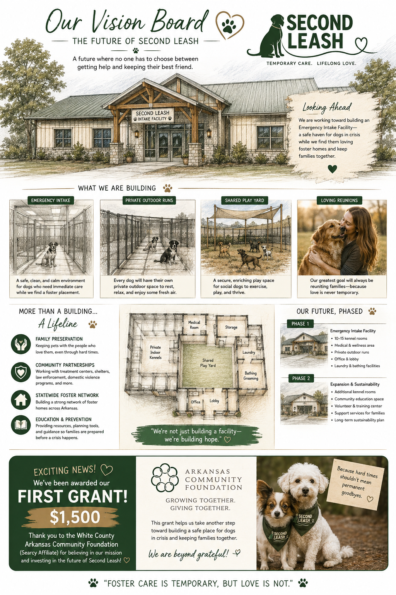

Urgent intake
Some families have only hours—not days—to find safe care before entering treatment, hospitalization, shelter, or another crisis setting.
Our future vision
Second Leash envisions an Emergency Intake & Crisis Care Center where dogs can receive safe, temporary care when a foster home is not immediately available.
This is a long-term vision—not a facility that currently exists. We are sharing it openly so our community can understand the need, help shape the plan, and join us as the project develops responsibly.
Concept overview
This concept image illustrates the kind of compassionate, practical campus we hope to build. Final plans, location, capacity, costs, and timeline will depend on feasibility studies, professional guidance, funding, zoning, and community partnerships.

Why it matters
Some families have only hours—not days—to find safe care before entering treatment, hospitalization, shelter, or another crisis setting.
A small intake center could provide a temporary bridge while a suitable foster home, transportation plan, and care supplies are arranged.
Temporary crisis care can help keep owned, loved dogs from entering already crowded shelter systems solely because their person needs help.
Coordinated records, veterinary care, owner communication, and transition planning can support safer and more stable reunions.
What it could include
Responsible growth
Secure land or an appropriate existing property, establish limited emergency suites, sanitation systems, storage, and safe outdoor space.
Add training, grooming, medical-support, volunteer, and owner-reunion spaces as funding and demonstrated need allow.
Develop education, outreach, disaster-response, walking, and partnership spaces only after core services are sustainable.
Help build the future
Second Leash will need experienced partners who can help evaluate land, zoning, construction, animal-care design, insurance, veterinary protocols, operations, fundraising, and long-term sustainability.
No one should have to choose between getting help and keeping the dog they love.